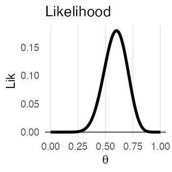
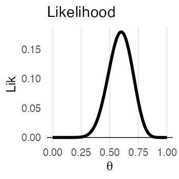

統計モデリング入門 2023 岩手連大
(Graduate School of Life Sciences, Tohoku University)
https://heavywatal.github.io/slides/iwate2023stats/
コイントス4回、たまたま表が1回だったら
- 最尤推定
- 推定結果は最も尤もらしい1点。
- データが少ないとき過剰適合気味。
- 表が出る確率 p = 0.25 のコインだろう。
(信じ難いけどデータはこう言っている)
- ベイズ推定
- 推定結果は確率分布そのもの。
- データが少ないなりの不確実さも表現。
- p = 0.25 らへんである確率は高いが、
p = 0.6 とかである可能性もまあある。

コイントスの回数が増えていったら
最尤推定: 推定値が真の値に近づいていく

ベイズ推定: 確率分布がどんどん尖り、確信が強まる

確率おさらい
- 同時分布/結合確率: AかつBの確率
- $\Pr(\textcolor{#E69F00}{A}, \textcolor{#0072B2}{B}) = \Pr(\textcolor{#E69F00}{A} \cap \textcolor{#0072B2}{B}) = \Pr(\textcolor{#E69F00}{A}) \Pr(\textcolor{#0072B2}{B})$
- 周辺確率: BによらずAになる確率
- $\Pr(\textcolor{#E69F00}{A}) = \sum_{\textcolor{#0072B2}{B}} \Pr(\textcolor{#E69F00}{A}, \textcolor{#0072B2}{B})$
- 条件付き確率: Bである条件の下でAになる確率。重要。
- $\Pr(\textcolor{#E69F00}{A} \mid \textcolor{#0072B2}{B}) = \frac {\Pr(\textcolor{#E69F00}{A}, \textcolor{#0072B2}{B})} {\Pr(\textcolor{#0072B2}{B})}$
条件付き確率がよくわかる具体例
- B BreweryのビールがAwesomeな確率
- $\Pr(\textcolor{#E69F00}{\text{Awesome}} \mid \textcolor{#0072B2}{\text{B Brewery}}) = \frac {\Pr(\textcolor{#E69F00}{\text{Awesome}},~\textcolor{#0072B2}{\text{B Brewery}})} {\Pr(\textcolor{#0072B2}{\text{B Brewery}})}$
- かなり高い確率。良い醸造所。
- AwesomeなビールがB Breweryのものである確率
- $\Pr(\textcolor{#0072B2}{\text{B Brewery}} \mid \textcolor{#E69F00}{\text{Awesome}}) = \frac {\Pr(\textcolor{#E69F00}{\text{Awesome}},~\textcolor{#0072B2}{\text{B Brewery}})} {\Pr(\textcolor{#E69F00}{\text{Awesome}})}$
- かなり低い確率。Awesomeなビールはほかにもたっくさんある。
ベイズの定理
- 乗法定理
- $\Pr(\textcolor{#E69F00}{A},~\textcolor{#0072B2}{B}) = \Pr(\textcolor{#E69F00}{A} \mid \textcolor{#0072B2}{B})~\Pr(\textcolor{#0072B2}{B}) = \Pr(\textcolor{#0072B2}{B} \mid \textcolor{#E69F00}{A})~\Pr(\textcolor{#E69F00}{A})$

移項するだけでベイズの定理:
宴会場にビールが運ばれてきた。これはどこのブルワリーの？
- 事前確率: $\Pr(\textcolor{#0072B2}{B})$
- 飲む前、手元のビールがB Breweryのである確率。
- ↓ 🍻 飲んでみて更新
- 事後確率: $\Pr(\textcolor{#0072B2}{B} \mid \textcolor{#E69F00}{A})$
- 飲んでみてAwesomeだったビールが B Breweryのである確率。
ベイズの定理 in 感染症検査
- 有病率 $\Pr(I)$ : 0.3% (この地域の感染者の割合; 事前確率)
- 感度 $\Pr(P \mid I)$ : 90% (感染してる人に陽性判定が出る)
- 特異度 $\Pr(\lnot P \mid \lnot I)$: 99% (感染してない人に陰性判定が出る)
さて、陽性適中率(検査陽性の人が実際に感染者である確率)は？
感染者を隔離するスクリーニング目的では使いものにならない性能。
🔰 同様に $\Pr(\lnot I \mid \lnot P)$ 陰性的中率を計算してみよう
🔰 計算結果が検査性能だけでなく有病率にも依存することを確認しよう
ベイズの定理 in 統計モデリング
モデル$M$に対する確信度合いをデータ$D$に基づいて更新する。
モデル$M$を仮説$H$やパラメータ$\theta$に置き換えてもいい。
周辺尤度は「確率分布の積分は1」を満たすための正規化定数とみなせる。
比例関係だけ抜き出してこう書くことが多い:
表が出る確率のベイズ推定: 1. 事前分布
 $\propto$
$\propto$
 ⨉
⨉
コイントスを繰り返して、表が出る確率pをベイズ推定したい。
事前分布にはベータ分布を採用(理由は後で分かる):
分布の形は $a,~b$ によって決まる。
ガンマ関数の部分は厳つく見えるけどただの正規化定数。
投げる前なのでとりあえず真っ平らを仮定 $\text{Beta}(p \mid a = 1, b = 1)$:
表が出る確率のベイズ推定: 2. 尤度関数
$\propto$
⨉
4回投げて表が1回だった、というデータで尤度を計算(二項分布):
これに事前分布を掛けて正規化したら事後分布になるはず。
表が出る確率のベイズ推定: 3. 事後分布
$\propto$
⨉
なんと、事後分布もベータ分布になる。
ベータ分布の形パラメータ$a$が表、$b$が裏の回数分だけ増加。
表が出る確率のベイズ推定: 4. 逐次学習
さっきの事後分布を事前分布として、さらにデータを集める。
コイントス4回のうち表1回、に基づく事前分布: $\text{Beta}(p \mid 2,~4)$
さらに16回投げたら表が7回、の尤度: $\text{Binomial}(7 \mid 16,~p)$
事後分布はまた事前分布と同じ形になる:
データを加えるたびに更新していける:

共役事前分布
事後分布が事前分布と同じ形なので計算しやすい、という組み合わせ。
| 尤度関数 | 共役事前分布 |
|---|---|
| 二項分布 | ベータ分布 |
| ポアソン分布 | ガンマ分布 |
| 正規分布 | ガンマ分布 |
| 正規分布 (分散既知) | 正規分布 |
共役事前分布を使うことが常に最善とは限らない。
計算コストがかかっても無情報事前分布を使う風潮。
事後分布を用いた推定
- 区間推定
- 幅のある推定値を提示
- e.g., 95%ベイズ確信区間:
等裾事後確信区間 (Equal-Tailed Interval)
最高密度区間 (Highest Density Interval) - 点推定
- 値を1点だけ提示
- e.g.,
事後確率最大値 (Maximum A Posteriori)
事後中央値 (Posterior Median)
事後期待値 (Expected A Posteriori)

ベイズ推定の中間まとめ
- 推定結果は事後分布 ∝ 尤度関数。
- 広がり具合によって不確実性も表現できる。
- 逐次学習で尖っていき、確信が強まる。
コイン投げモデルのベータ分布は美しい例。
→ 解析的(数学的)に解ける。
実践的なモデル・事後分布はもっと複雑。
→ コンピュータに頼って数値計算: MCMC
MCMC: Marcov Chain Monte Carlo

- マルコフ連鎖
- 次の時点の挙動が現在の値だけで決定されるような確率過程。
- $\ldots \to X_{t - 2} \to X_{t - 1} \to X_{t} \to X_{t + 1}$
- $\Pr(X_{t+1} \mid X_{t}, X_{t-1}, X_{t-2}, \ldots) = \Pr(X_{t+1} \mid X_{t})$
- e.g., すごろく
- モンテカルロ法
- 乱数を用いた計算方法の総称。
-


モンテカルロ法は乱数を用いた計算方法
e.g., 半径1の円の面積
数学を知っていれば $\pi r ^ 2 \approx 3.14159$
面積4の正方形に400個の一様乱数を打ち込んだら318個が円に乗った:
$4 \times \frac {318} {400} = 3.18$
変な分布もモンテカルロ法で扱えそう
e.g., 確率密度分布に従って変数Xを集める(棄却サンプリング)。
 $\;\sim\;$
$\;\sim\;$
でも、ハズレの値もけっこう引いてしまう。
次元の呪い: 高次元になるほど当たりにくくなる
(N次元球の体積 / N次元の立方体) はゼロに近づいていく。
- 2次元: $\frac {\pi r ^ 2} {(2r) ^ 2} = \frac \pi 4 \approx 0.79$
- 3次元: $\frac {\frac 4 3 \pi r ^ 3} {(2r) ^ 3} = \frac \pi 6 \approx 0.52$
- N次元: $\frac {\frac {\pi ^ {N/2}} {\Gamma (N/2 + 1)} r ^ N} {(2r) ^ N} = \frac {\pi ^ {N/2}} {2^N \Gamma (N/2 + 1)} \to 0$
パラメータが増えると計算量(≈乱数の無駄撃ち)が急増。
密度の高い「当たり」付近を効率よく探索したい。
「当たり」は「当たり」の近くにありがちだろう。
→ マルコフ連鎖が使えそう
Metropolis–Hastings法 (MH法)
- パラメータ $\theta$ の初期値を選ぶ
- $\theta$ をちょっと増減させて $\theta_\text{new}$ を作る
- それぞれ尤度を計算し、比較。
- $L(\theta_\text{new}) \ge L(\theta)$ なら $\theta_\text{new}$ を即採択
- $L(\theta_\text{new}) < L(\theta)$ でも 確率 $r = \frac {L(\theta_\text{new})} {L(\theta)}$ で $\theta_\text{new}$ を採択
- $\theta_\text{new}$ が採択されたら $\theta$ を更新。手順1に戻る。
採択されたパラメータ値の軌跡
尤度が高い方にただ向かうだけでなく、結構うろつく。
通ったパラメータ値を集めるといい感じの分布が得られる。
尤度に比例する事後分布からサンプルしたのと等価
全体にばら撒く棄却サンプリングよりも効率よく集められる。
が、パラメータ1つの1次元ではご利益はわかりにくい。
 $\;\propto\;$

$\;\propto\;$

パラメータが複数ある場合は？
Gibbs Sampling
パラメータが複数の場合「ほかを固定してひとつ更新」を繰り返す。
e.g., 二次元正規分布。(-2, 2) からスタート。
何回やっても似たような結果になってほしい
乱数や初期値によって偶々、じゃないことを確認したい。
e.g., chains = 3 。ほぼ同じところをうろうろ:

収束(convergence)の判定については後ほど。
初期値の影響が消えるまでウォーミングアップ
定常分布の山に到達してからが本番。
e.g., iter_warmup = 200, iter_sampling = 600 で灰色の部分を捨てる:
どれくらい長く捨てるべきかは場合による。
適度に間引いて自己相関を軽減したい
直前の値と似すぎていたら独立サンプルとして扱えないので。
e.g., thin = 5 で5回に1回だけサンプルする:

間引かなくても大丈夫な場合も、間引いても解決しない場合もある。
収束判定
- 複数chainsで異なる初期値から実行し、軌跡を可視化(traceplot)
- Gelman-Rubin統計量 $\hat R < 1.05$
- Effective Sample Size (ESS) $N_\text{eff} > 100$ per chain
diagnose()
みたいな機能が提供されていれば利用する。
実行時に警告してもらえることもある。
収束・自己相関が悪い場合にどう改善するか
- 小手先の対処
- iteration (warmup + sampling) をもっと長く
- thinを大きくして間引く
- ちょっと大掛かり
- プログラムの書き方を改善する
- モデルの構造を見直す
- アルゴリズム・ソフトウェアを変える
似て非なる: MCMCサンプル増やす vs データ増やす
$\;\propto\;$
- MCMCサンプルを増やす → 事後分布・尤度関数をより良く近似
- データを増やす → 分布の裾野が狭まり、確信が強まる
MCMCの方法いろいろ
採択率を高め、早く収束するように改良されてきている。
- Metropolis–Hastings法
- Gibbs Sampling
- Hamiltonian Monte Carlo (HMC)
- No-U-Turn Sampler (NUTS)
MCMCソフトウェア
Stan
- Stan言語でモデルを柔軟に記述できる。
- C++で書かれていて高速に動作。
- RやPythonなどから呼び出して使うのが便利。
R Interface
- RStan
- Rcppを介してStanHeadersを取り込んだパッケージ。
- CmdStanR 👈 今後の主流
- CmdStan を呼び出し、書き出されたCSVを読み取る。
CmdStanR: インストールがちょっと特殊
実行の前後にRを再起動してまっさらにすることを推奨。
- C++言語を扱うためのツールを用意。
macOS: Command Line Tools ( xcode-select --install)Windows: RTools (Rのバージョンに合わせる)
- CmdStanRパッケージをインストール。
(まだCRANに登録されていない):
install.packages("cmdstanr", repos = c("https://mc-stan.org/r-packages/", getOption("repos"))) - CmdStan本体と可視化パッケージのインストール:
library(cmdstanr) check_cmdstan_toolchain(fix = TRUE) install_cmdstan() install.packages("bayesplot")
🔰 とりあえずStanを動かしてみよう
library(cmdstanr)
library(bayesplot)
This is cmdstanr version 0.5.3
- CmdStanR documentation and vignettes: mc-stan.org/cmdstanr
- CmdStan path: /Users/watal/.cmdstan/cmdstan-2.32.2
- CmdStan version: 2.32.2
This is bayesplot version 1.10.0
おおまかな流れ:
- データ準備
- Stan言語でモデルを書く
- モデルをコンパイルして機械語に翻訳 → 実行ファイル
- 実行ファイルにデータを渡してMCMCサンプリング
- 結果を見る
説明変数なしのベイズ推定: データ準備
表が出る確率 $p=0.7$ のイカサマコインをN回投げたデータを作る。
この $p$ をStanで推定してみよう。
true_p = 0.7
N = 40L
coin_data = list(N = N, x = rbinom(N, 1, true_p))
print(coin_data)
$N
[1] 40
$x
[1] 1 0 0 1 1 1 1 0 1 0 1 1 0 1 1 0 1 1 1 1 0 0 1 1 1 1 1 1 1 0 1 1 0 1 1 0 1 1 1 1
Rならlist型、Pythonならdict型にまとめてStanに渡す。
説明変数なしのベイズ推定: Stan言語でモデル定義
別ファイルに書いておく。
e.g., coin.stan:
data {
int<lower=0> N;
array[N] int x;
}
parameters {
real<lower=0,upper=1> p;
}
model {
x ~ binomial(1, p);
}
- いくつかのブロックに分けて記述する:
R/Pythonから受け取るdata, 推定するparameter, 本体のmodel. - 変数には型や制約を設定できる
- 関数もたくさん用意されている
Stan言語の7種のブロック
順番厳守。よく使うのは太字のやつ。
functions {...}data {...}transformed data {...}parameters {...}transformed parameters {...}model {...}generated quantities {...}
https://mc-stan.org/docs/reference-manual/overview-of-stans-program-blocks.html
説明変数なしのベイズ推定: MCMCサンプル
予め実行速度の速い機械語に翻訳(コンパイル):
model = cmdstanr::cmdstan_model("stan/coin.stan")
モデルとデータを使ってMCMCサンプリング:
fit = model$sample(coin_data, seed = 24601L)
いろいろオプションはあるけど、ここではデフォルトに任せる:
chains, inits, iter_warmup, iter_samples, thin, …
問題があったら警告してくれるのでちゃんと読む。
説明変数なしのベイズ推定: 結果を眺める
parameters ブロックに書いた変数の情報が出てくる。
乱数を使った計算なので(乱数シードを固定しない限り)毎回変わる。
print(fit)
variable mean median sd mad q5 q95 rhat ess_bulk ess_tail
lp__ -25.62 -25.35 0.70 0.30 -27.00 -25.13 1.00 1949 2646
p 0.72 0.72 0.07 0.07 0.60 0.82 1.00 1586 2132
真の値に近い $p \approx 0.7$ が得られた
(0.6 から
0.82 である確率が90%)。
$\hat R$ もほぼ1で $N_\text{eff}$ も大きいのでよさそう。
lp__ はlog posterior(対数事後確率)。後述。
念のため trace plot も確認しておこう→
説明変数なしのベイズ推定: trace plot 確認
どのchainも似た範囲を動いていて、しっかり毛虫っぽい:
draws = fit$draws()
params = names(model$variables()$parameters)
bayesplot::mcmc_trace(draws, pars = params)
説明変数なしのベイズ推定: 自己相関の確認
2–3ステップくらいで自己相関がほぼ消えるので問題なし:
bayesplot::mcmc_acf_bar(draws, pars = params)
説明変数なしのベイズ推定: 推定結果確認
サンプルサイズNが小さいせいか裾野の広い推定結果。
真の$p$の値も含まれている:
bayesplot::mcmc_hist(draws, bins = 20, pars = params)
lp__: log posterior とは?
model ブロックに次のように書いてあると:
model {
mu ~ normal(0.0, 10.0); // prior
x ~ normal(mu, 1.0); // likelihood
}
内部的には次のような処理が行われている:
target += normal_lpdf(theta | 0.0, 10.0) // prior
target += normal_lpdf(x | theta, 1.0); // likelihood
つまり、事前確率と尤度の対数の和を取っている。
ベイズの定理により、事後確率はこれに比例する。
lp__ はこの target 変数を記録しておいたようなもの。
Stanで回帰じゃないパラメータ推定、まとめ
別ファイルに書いておく。
e.g., coin.stan:
data {
int<lower=0> N;
array[N] int x;
}
parameters {
real<lower=0,upper=1> p;
}
model {
x ~ binomial(1, p);
}
Rからデータを渡して走らせる:
coin_data = tibble::lst(N = 50L, x = rbinom(N, 1, 0.7))
coin_model = cmdstanr::cmdstan_model("stan/binom.stan")
coin_fit = coin_model$sample(coin_data, seed = 24601L)
直線回帰するStanコードの例
受け渡しするデータや推定するパラメータがちょっと増えただけ。
data {
int<lower=0> N;
vector<lower=0>[N] x;
vector[N] y;
}
parameters {
real intercept;
real slope;
real<lower=0> sigma;
}
model {
y ~ normal(intercept + slope * x, sigma);
}
Rと同様、 slope * x のようなベクトル演算ができる。
直線回帰っぽいデータに当てはめてみる
samplesize = 50L
df_lm = tibble::tibble(
x = rnorm(samplesize, 1.70, 0.05),
bmi = rnorm(samplesize, 22, 1),
y = bmi * (x**2)
)
操作は回帰じゃないモデルと同じ
# リストに入れて渡す:
lm_data = as.list(df_lm)
lm_data[["N"]] = samplesize
# モデルを実行速度の速い機械語に翻訳(コンパイル):
lm_model = cmdstanr::cmdstan_model("stan/lm.stan")
# モデルとデータを使ってMCMCサンプリング:
lm_fit = lm_model$sample(lm_data, seed = 19937L, refresh = 0)
print(lm_fit)
variable mean median sd mad q5 q95 rhat ess_bulk ess_tail
lp__ -79.47 -79.15 1.28 1.02 -81.99 -78.10 1.00 1051 1168
intercept -69.28 -69.10 14.23 14.08 -92.40 -45.77 1.00 1033 1134
slope 78.30 78.22 8.36 8.27 64.45 91.85 1.00 1033 1154
sigma 3.09 3.07 0.33 0.32 2.59 3.67 1.01 1426 1096
切片と傾きはそれらしき値。 $\hat R$ や $N_{eff}$ も良さそう。 もう少し確認しよう。
CmdStanによる診断
lm_fit$cmdstan_diagnose()
satisfactory とか no problems ばかりであることを確認
Treedepth satisfactory for all transitions.
No divergent transitions found.
E-BFMI satisfactory.
Effective sample size satisfactory.
Split R-hat values satisfactory all parameters.
Processing complete, no problems detected.
draws: 生のMCMCサンプル
lm_draws_array = lm_fit$draws()
dim(lm_draws_array)
[1] 1000 4 4
print(lm_draws_array)
# A draws_array: 1000 iterations, 4 chains, and 4 variables
, , variable = lp__
chain
iteration 1 2 3 4
1 -78 -78 -80 -81
2 -79 -79 -80 -81
3 -79 -79 -80 -81
4 -79 -79 -79 -80
5 -80 -79 -80 -80
, , variable = intercept
chain
iteration 1 2 3 4
1 -76 -71 -51 -72
2 -85 -71 -82 -72
3 -86 -71 -78 -73
4 -85 -71 -74 -84
5 -49 -83 -73 -82
, , variable = slope
chain
iteration 1 2 3 4
1 82 80 67 80
2 88 80 86 80
3 88 80 84 81
4 87 79 81 87
5 66 87 81 86
, , variable = sigma
chain
iteration 1 2 3 4
1 3.2 3.3 3.6 2.4
2 3.1 3.4 2.6 2.4
3 3.2 3.4 2.5 2.5
4 3.1 3.5 2.7 2.6
5 3.0 3.3 2.5 2.6
# ... with 995 more iterations
draws: data.frameのほうが見やすいかも
lm_draws = lm_fit$draws(format = "df") |> print()
# A draws_df: 1000 iterations, 4 chains, and 4 variables
lp__ intercept slope sigma
1 -78 -76 82 3.2
2 -79 -85 88 3.1
3 -79 -86 88 3.2
4 -79 -85 87 3.1
5 -80 -49 66 3.0
6 -79 -49 66 3.0
7 -80 -40 61 3.1
8 -80 -40 61 3.1
9 -78 -70 78 3.3
10 -79 -69 78 3.3
# ... with 3990 more draws
# ... hidden reserved variables {'.chain', '.iteration', '.draw'}
実体はCmdStanが書き出したCSVファイル:
lm_fit$output_files()
[1] "/var/folders/**/***/T/Rtmp******/*-2023****-1-******.csv"
[2] "/var/folders/**/***/T/Rtmp******/*-2023****-2-******.csv"
[3] "/var/folders/**/***/T/Rtmp******/*-2023****-3-******.csv"
[4] "/var/folders/**/***/T/Rtmp******/*-2023****-4-******.csv"
traceplot: サンプル順に draws を並べたもの
どの chain も同じところをうろうろしていればOK。
params = names(lm_model$variables()$parameters)
bayesplot::mcmc_trace(lm_draws, pars = params, facet_args = list(ncol = 1))
各パラメータの事後分布
bayesplot::mcmc_hist(lm_draws, pars = params, bins = 30)
Posterior Predictive Checking (PPC)
サイズ $S$ のパラメータdrawsと $N$ 個の観察値から $S \times N$ 行列の $y_{rep}$ を生成:
mu_rep = lm_draws$intercept + lm_draws$slope %o% df_lm$x
yrep = mu_rep + rnorm(prod(dim(mu_rep)), 0, lm_draws$sigma)
bayesplot::ppc_intervals(y = df_lm[["y"]], yrep = yrep,
x = df_lm[["x"]], prob = 0.5, prob_outer = 0.9)
変数とブロックをうまく使って可読性アップ
途中計算に名前をつけることでモデルが読みやすくなる:
model {
vector[N] mu = intercept + slope * x;
y ~ normal(mu, sigma);
}
transformed parameters ブロックに書くとさらに見通しがよくなる:
transformed parameters {
vector[N] mu = intercept + slope * x;
}
model {
y ~ normal(mu, sigma);
}
見た目が変わるだけでなくMCMCサンプルが記録されるようになる。
drawsは嵩むが頭は使わずに済む
lmtr_model = cmdstanr::cmdstan_model("stan/lm-transformed.stan")
lmtr_fit = lmtr_model$sample(lm_data, seed = 19937L, refresh = 0)
lmtr_draws = lmtr_fit$draws(format = "df") |> print()
# A draws_df: 1000 iterations, 4 chains, and 54 variables
lp__ intercept slope sigma mu[1] mu[2] mu[3] mu[4] mu[5] mu[6] mu[7] mu[8] mu[9] mu[10] mu[11] mu[12] mu[13] mu[14] mu[15] mu[16] mu[17] mu[18] mu[19] mu[20] mu[21] mu[22] mu[23] mu[24] mu[25] mu[26] mu[27] mu[28] mu[29] mu[30] mu[31] mu[32] mu[33] mu[34] mu[35] mu[36] mu[37] mu[38] mu[39] mu[40] mu[41] mu[42] mu[43] mu[44] mu[45] mu[46] mu[47] mu[48] mu[49] mu[50]
1 -78.4 -76.2 82.5 3.21 65.5 70.9 57.2 62.2 65.3 58.2 71.0 61.9 58.8 64.5 68.5 62.8 61.5 65.4 63.2 63.0 67.8 61.6 57.4 56.1 61.8 64.4 65.5 67.1 64.4 62.0 64.2 59.1 72.3 64.3 73.6 68.2 65.2 64.4 69.5 67.7 55.4 66.3 70.1 53.6 65.1 68.2 60.9 62.3 60.3 64.7 69.2 67.7 66.5 62.1
2 -78.9 -85.3 87.9 3.15 65.7 71.4 56.9 62.2 65.5 57.9 71.5 61.8 58.6 64.6 68.9 62.8 61.5 65.6 63.2 63.0 68.1 61.5 57.1 55.7 61.7 64.5 65.7 67.4 64.5 61.9 64.3 58.8 72.9 64.4 74.3 68.6 65.3 64.5 70.0 68.0 55.0 66.5 70.6 53.0 65.3 68.5 60.8 62.2 60.2 64.9 69.7 68.0 66.8 62.1
3 -79.0 -85.9 88.3 3.16 65.7 71.5 56.9 62.2 65.6 57.9 71.6 61.8 58.6 64.6 68.9 62.8 61.5 65.6 63.2 63.0 68.2 61.5 57.1 55.7 61.7 64.5 65.7 67.4 64.6 61.9 64.3 58.9 73.0 64.4 74.4 68.6 65.4 64.6 70.0 68.1 55.0 66.5 70.7 53.0 65.4 68.6 60.8 62.3 60.2 64.9 69.7 68.1 66.8 62.1
4 -79.1 -85.0 87.2 3.10 64.9 70.6 56.1 61.4 64.7 57.2 70.7 61.0 57.9 63.8 68.1 62.0 60.7 64.8 62.4 62.2 67.3 60.8 56.3 54.9 61.0 63.7 64.9 66.5 63.7 61.2 63.5 58.1 72.1 63.6 73.4 67.8 64.5 63.7 69.1 67.2 54.2 65.7 69.8 52.3 64.5 67.7 60.1 61.5 59.4 64.1 68.8 67.2 66.0 61.3
5 -79.6 -49.1 66.2 3.01 64.6 68.9 58.0 62.0 64.5 58.7 69.0 61.7 59.3 63.8 67.0 62.4 61.4 64.5 62.7 62.6 66.4 61.5 58.1 57.1 61.6 63.7 64.6 65.9 63.7 61.8 63.5 59.5 70.0 63.6 71.1 66.8 64.3 63.7 67.8 66.4 56.5 65.2 68.3 55.1 64.3 66.7 60.9 62.0 60.5 64.0 67.6 66.4 65.5 61.9
6 -79.3 -48.8 66.5 3.01 65.4 69.7 58.7 62.7 65.2 59.5 69.8 62.4 60.0 64.5 67.8 63.2 62.2 65.3 63.5 63.3 67.2 62.2 58.8 57.8 62.4 64.5 65.4 66.6 64.5 62.5 64.3 60.2 70.8 64.4 71.9 67.6 65.1 64.5 68.6 67.1 57.2 66.0 69.1 55.8 65.1 67.5 61.7 62.7 61.2 64.7 68.4 67.1 66.2 62.6
# ... with 3994 more draws
# ... hidden reserved variables {'.chain', '.iteration', '.draw'}
この右側の mu 行列はさっき苦労して作った mu_rep と同じ。
ひょっとして yrep もStanで作れる？
generated quantities ブロックで乱数生成
(data と parameters のブロックは同じなので省略)
transformed parameters {
vector[N] mu = intercept + slope * x;
}
model {
y ~ normal(mu, sigma);
}
generated quantities {
array[N] real yrep = normal_rng(mu, sigma);
}
normal_rng()
のような乱数生成が使えるのは
generated quantities ブロックだけ。
(yrep を vector[N] 型で作ろうとすると怒られる。)
drawsはさらに嵩むがコードは美しくなった
lmgen_model = cmdstanr::cmdstan_model("stan/lm-generated.stan")
lmgen_fit = lmgen_model$sample(lm_data, seed = 19937L, refresh = 0)
lmgen_draws = lmgen_fit$draws(format = "df") |> print()
# A draws_df: 1000 iterations, 4 chains, and 104 variables
lp__ intercept slope sigma mu[1] mu[2] mu[3] mu[4] mu[5] mu[6] mu[7] mu[8] mu[9] mu[10] mu[11] mu[12] mu[13] mu[14] mu[15] mu[16] mu[17] mu[18] mu[19] mu[20] mu[21] mu[22] mu[23] mu[24] mu[25] mu[26] mu[27] mu[28] mu[29] mu[30] mu[31] mu[32] mu[33] mu[34] mu[35] mu[36] mu[37] mu[38] mu[39] mu[40] mu[41] mu[42] mu[43] mu[44] mu[45] mu[46] mu[47] mu[48] mu[49] mu[50] yrep[1] yrep[2] yrep[3] yrep[4] yrep[5] yrep[6] yrep[7] yrep[8] yrep[9] yrep[10] yrep[11] yrep[12] yrep[13] yrep[14] yrep[15] yrep[16] yrep[17] yrep[18] yrep[19] yrep[20] yrep[21] yrep[22] yrep[23] yrep[24] yrep[25] yrep[26] yrep[27] yrep[28] yrep[29] yrep[30] yrep[31] yrep[32] yrep[33] yrep[34] yrep[35] yrep[36] yrep[37] yrep[38] yrep[39] yrep[40] yrep[41] yrep[42] yrep[43] yrep[44] yrep[45] yrep[46] yrep[47] yrep[48] yrep[49] yrep[50]
1 -78.4 -76.2 82.5 3.21 65.5 70.9 57.2 62.2 65.3 58.2 71.0 61.9 58.8 64.5 68.5 62.8 61.5 65.4 63.2 63.0 67.8 61.6 57.4 56.1 61.8 64.4 65.5 67.1 64.4 62.0 64.2 59.1 72.3 64.3 73.6 68.2 65.2 64.4 69.5 67.7 55.4 66.3 70.1 53.6 65.1 68.2 60.9 62.3 60.3 64.7 69.2 67.7 66.5 62.1 70.9 69.1 57.9 64.3 59.7 57.3 70.3 68.4 55.6 65.6 73.6 65.4 61.0 63.6 65.1 55.1 68.8 65.9 55.1 56.9 60.5 67.0 65.0 67.0 60.9 65.0 67.2 65.4 78.7 63.8 79.7 72.6 69.5 64.1 67.3 68.5 57.1 65.6 73.9 52.5 61.6 68.0 63.2 61.5 57.2 67.6 67.2 70.9 66.8 60.2
2 -78.4 -76.5 82.4 3.22 65.1 70.4 56.8 61.8 64.9 57.7 70.5 61.4 58.4 64.0 68.1 62.3 61.1 64.9 62.7 62.5 67.3 61.1 57.0 55.6 61.3 63.9 65.1 66.6 64.0 61.5 63.7 58.6 71.8 63.8 73.1 67.8 64.7 64.0 69.1 67.2 55.0 65.8 69.7 53.2 64.7 67.7 60.5 61.8 59.9 64.3 68.8 67.2 66.1 61.6 66.4 70.1 60.0 58.1 65.1 57.9 76.3 63.2 56.3 70.8 69.9 62.1 58.9 71.2 65.5 62.2 73.0 63.3 64.0 49.3 64.3 64.5 65.1 74.4 66.9 60.2 63.0 54.9 71.2 69.1 74.5 68.0 67.7 67.7 66.9 65.5 57.4 64.6 71.2 58.1 62.3 72.3 62.0 60.4 61.4 61.7 65.4 65.5 65.6 61.2
3 -78.4 -61.5 73.6 2.84 64.9 69.7 57.5 62.0 64.8 58.4 69.8 61.7 59.0 64.0 67.6 62.5 61.4 64.8 62.9 62.7 67.0 61.4 57.7 56.5 61.6 63.9 64.9 66.3 64.0 61.8 63.7 59.2 71.0 63.8 72.1 67.4 64.6 63.9 68.5 66.9 55.9 65.6 69.1 54.3 64.6 67.3 60.8 62.0 60.3 64.2 68.2 66.9 65.9 61.9 69.0 64.7 59.2 58.0 66.3 60.6 70.3 62.9 62.4 63.7 76.1 59.0 58.0 60.2 58.6 59.0 70.5 62.1 58.8 61.4 61.1 62.4 66.5 71.4 63.7 65.0 66.2 59.9 72.2 63.7 72.1 62.7 64.2 64.9 71.1 70.2 58.9 70.5 68.0 57.4 61.1 67.5 54.8 62.2 61.2 59.3 68.5 69.1 68.4 63.6
4 -79.1 -89.6 90.2 2.89 65.3 71.2 56.3 61.8 65.2 57.3 71.3 61.3 58.0 64.2 68.6 62.4 61.0 65.2 62.8 62.6 67.8 61.0 56.5 55.0 61.3 64.1 65.3 67.0 64.1 61.5 63.9 58.3 72.7 64.0 74.2 68.3 64.9 64.1 69.7 67.7 54.3 66.2 70.4 52.3 64.9 68.2 60.3 61.8 59.7 64.5 69.4 67.7 66.5 61.6 62.9 67.7 59.1 66.8 65.1 60.4 73.5 56.1 58.0 69.0 72.8 59.0 59.7 61.7 64.2 64.5 70.8 61.4 62.5 54.1 58.3 63.5 61.8 68.7 63.3 61.6 64.6 57.9 66.4 60.0 75.8 65.5 61.4 68.0 68.0 70.6 57.3 67.1 70.2 51.4 62.0 69.8 58.9 68.7 58.6 63.1 73.4 64.4 67.0 60.4
5 -79.7 -91.8 91.7 2.86 65.8 71.7 56.5 62.1 65.6 57.6 71.8 61.7 58.3 64.6 69.1 62.7 61.3 65.6 63.2 63.0 68.3 61.4 56.7 55.3 61.6 64.5 65.7 67.5 64.5 61.8 64.2 58.6 73.3 64.4 74.7 68.8 65.4 64.5 70.2 68.2 54.6 66.6 70.9 52.5 65.4 68.7 60.7 62.1 60.0 64.9 69.9 68.2 66.9 62.0 61.3 72.3 55.8 59.3 67.9 56.2 71.8 62.4 56.6 66.7 75.5 58.7 65.2 69.8 61.5 62.9 66.2 62.9 60.0 54.9 63.3 65.2 68.4 69.8 64.7 69.3 60.3 57.0 74.5 64.5 76.8 67.9 64.3 64.2 73.8 74.0 59.0 69.7 69.7 50.7 65.0 69.7 60.1 62.7 58.8 68.3 70.6 66.2 67.1 62.2
6 -79.4 -91.9 91.6 2.86 65.5 71.5 56.3 61.9 65.3 57.4 71.6 61.5 58.1 64.4 68.9 62.5 61.1 65.4 62.9 62.7 68.0 61.2 56.5 55.1 61.4 64.3 65.5 67.3 64.3 61.6 64.0 58.4 73.0 64.2 74.5 68.6 65.1 64.3 70.0 67.9 54.3 66.4 70.7 52.3 65.1 68.5 60.4 61.9 59.8 64.7 69.7 67.9 66.7 61.7 67.6 73.5 57.0 66.3 66.9 63.1 71.3 57.6 61.7 66.7 64.0 63.1 62.9 66.1 61.8 60.8 68.3 56.3 54.3 49.0 61.7 62.4 62.0 73.7 63.3 57.3 63.8 58.9 72.3 66.5 67.3 73.0 62.6 62.5 68.8 75.1 56.8 66.7 74.8 52.2 64.3 71.1 60.8 65.3 60.8 63.7 66.7 73.0 68.7 64.8
# ... with 3994 more draws
# ... hidden reserved variables {'.chain', '.iteration', '.draw'}
yrep = lmgen_fit$draws("yrep", format = "matrix")
を取り出したらあとは bayesplot::ppc_*() に渡すだけ。
観察値とは違うXを使ってPredictionすることも可能
観察値の外側とか、均等間隔とか x_tilde を好きに作って渡せる。
data {
// ...
int<lower=0> N_tilde
vector[N_tilde] x_tilde;
}
// ...
generated quantities {
array[N_tilde] real y_tilde = normal_rng(intercept + slope * x_tilde, sigma);
}
変数の型: vector vs array
vector, row_vector, matrix は実数 real のみで、行列演算できる:
real x;
vector[3] v;
row_vector[3] r;
matrix[3, 3] m;
x * v // vector[3]
r * v // real
v * r // matrix[3, 3]
m * v // vector[3]
m * m // matrix[3, 3]
m[1] // row_vector[3]
array に型の制約は無いが、行列演算はできないので自力forループ:
array[3] int a;
array[3] int b;
for (i in 1:3) {
b[i] = 2 * a[i] + 1
}
パラメータの事前分布を明示的に設定できる
が、省略してもStanがデフォルトでうまくやってくれる。
そのせいで収束が悪いかも、となってから考えても遅くない。
parameters {
real intercept;
real slope;
real<lower=0> sigma;
}
model {
y ~ normal(intercept + slope * x, sigma);
intercept ~ normal(0, 100);
slope ~ normal(0, 100);
sigma ~ student_t(3, 0, 10);
}
設定したくなったら、どう選ぶか？
事前分布の選別
-
とりあえず無情報事前分布 $[-\infty, \infty]$。Stanのデフォルト。
-
収束が悪かったら弱情報事前分布を試す。
事後分布を更新していったとき事前分布っぽさが残らないのが良い。- 取りうる値を逃すような狭すぎる分布はダメ。
- 狭すぎるよりはマシだが、広すぎても良くない。
- 一様分布 $[a, b]$ は一見無情報っぽくて良さそうだが、
事後分布に裾野が残ったり絶壁ができたりしがちなので微妙。
おすすめ: 正規分布 or Student’s t分布
https://github.com/stan-dev/stan/wiki/Prior-Choice-Recommendations
Stanおすすめ弱情報事前分布: Student’s t分布
Student’s $t(\nu=\nu_0, \mu = 0, \sigma = \sigma_0)$
- 自由度 $3 \le \nu_0 \le 7 $ で適当に固定。
- $\nu = 1$ でコーシー分布。裾野が広すぎて良くないらしい。
- $\nu \to \infty$ で正規分布。だいたいこれでいいらしい。
- スケール $\sigma$: 「推定したい値は$[-\sigma_0, \sigma_0]$に収まるだろう」という値。
🔰 Stanで一般化線形モデル
GLM回のデータをStanでモデリングしてみよう。
-
直線回帰
-
ポアソン回帰
-
ロジスティック回帰
-
重回帰
-
分散分析
-
共分散分析


🔰 Stanでpenguinsの回帰分析をしてみよう
https://allisonhorst.github.io/palmerpenguins/

第3回GLM回を参照。
🔰 Stanでpenguinsの回帰分析をしてみよう
https://allisonhorst.github.io/palmerpenguins/
Stan does not support NA と怒られるので欠損値を取り除いておく:
penguins_dropna = penguins |> tidyr::drop_na(body_mass_g)
ちょっとずつ線形モデルを発展させていく

久保先生の"緑本"こと
「データ解析のための統計モデリング入門」
をベースに回帰分析の概要を紹介。
線形モデル LM (単純な直線あてはめ)
↓ いろんな確率分布を扱いたい
一般化線形モデル GLM
↓ 個体差などの変量効果を扱いたい
一般化線形混合モデル GLMM
↓ もっと自由なモデリングを！
階層ベイズモデル HBM
GLMMで登場した個体差を階層ベイズモデルで
植物100個体から8個ずつ種子を取って植えたら全体で半分ちょい発芽。
親1個体あたりの生存数はn=8の二項分布になるはずだけど、
極端な値(全部死亡、全部生存)が多かった。個体差？

個体差をモデルに組み込みたい
各個体の生存率$p_i$が能力値$z_i$のシグモイド関数で決まると仮定。
その能力値は全個体共通の正規分布に従うと仮定:
$z_i \sim \mathcal{N}(\hat z, \sigma)$

パラメータ2つで済む: 平均 $\hat z$, ばらつき $\sigma$ 。
個体能力のばらつき $\sigma$ が大きいと両端が増える
普通の二項分布は個体差無し $\sigma = 0$ を仮定してるのと同じ。


階層ベイズモデルのイメージ図
事前分布のパラメータに、さらに事前分布を設定するので階層ベイズ

さっきの図をStan言語で記述すると
10 とか 3 とか、エイヤっと決めてるやつが超パラメータ。
data {
int<lower=0> N;
array[N] int<lower=0> y;
}
parameters {
real z_hat; // mean ability
real<lower=0> sigma; // sd of r
vector[N] r; // individual difference
}
transformed parameters {
vector[N] z = z_hat + r;
vector[N] p = inv_logit(z);
}
model {
y ~ binomial(8, p);
z_hat ~ normal(0, 10);
r ~ normal(0, sigma);
sigma ~ student_t(3, 0, 1);
}
変量効果が入った推定結果
seeds_data = list(y = df_seeds_od$y, N = samplesize)
model = cmdstanr::cmdstan_model("stan/glmm.stan")
fit = model$sample(data = seeds_data, seed = 19937L, step_size = 0.1, refresh = 0)
draws = fit$draws(c("z_hat", "sigma", "r[1]", "r[2]"))
variable mean median sd mad q5 q95 rhat ess_bulk ess_tail
lp__ -455.60 -455.30 9.34 9.25 -471.31 -441.11 1.00 784 1292
z_hat 0.25 0.25 0.30 0.30 -0.24 0.74 1.00 777 1266
sigma 2.77 2.75 0.34 0.33 2.26 3.37 1.00 1145 1581
r[1] -0.23 -0.25 0.78 0.74 -1.51 1.08 1.00 3484 2638
r[2] 1.79 1.72 1.09 1.06 0.17 3.78 1.00 4776 2441
r[3] 1.74 1.65 1.07 0.99 0.17 3.66 1.00 4304 2656
r[4] -3.73 -3.54 1.60 1.49 -6.69 -1.51 1.00 4847 2537
r[5] -2.20 -2.13 1.02 1.01 -4.00 -0.65 1.00 4411 2449
r[6] -2.17 -2.10 1.02 0.95 -4.00 -0.64 1.00 4336 2545
r[7] 0.92 0.90 0.87 0.85 -0.45 2.40 1.00 4167 2377
# showing 10 of 303 rows (change via 'max_rows' argument or 'cmdstanr_max_rows' option)
抜粋して作図。悪くない。
データ生成の真のパラメータ値は $\hat z = 0.5,~\sigma = 3.0$ だった。
🔰 階層ベイズモデルの練習問題: 種の数
100個体の植物から8つずつ種を取った、のデータでやってみよう。
sigmoid = function(x, gain = 1) {1 / (1 + exp(-gain * x))}
samplesize = 100L
df_seeds_od = tibble::tibble(
z = rnorm(samplesize, 0.5, 3),
p = sigmoid(z),
y = rbinom(samplesize, 8L, p))
🔰 階層ベイズモデルの練習問題: ビール注文数
samplesize = 300L
lambda = 3
overdisp = 4
.n = lambda / (overdisp - 1)
.p = 1 / overdisp
df_beer_od = tibble::tibble(
X = rnbinom(samplesize, size = .n, prob = .p)
)
ベイズ推定まとめ
- 条件付き確率 $\Pr(B \mid A)$ の理解が大事。
- 事後分布 $\propto$ 尤度 ⨉ 事前分布
- 確信度合いをデータで更新していく。
- 推定結果は分布そのもの。
- そこから点推定も区間推定も可能。
- 解析的に解けない問題は計算機に乱数を振らせて解く。
- MCMCサンプル $\sim$ 解きにくい事後分布
- 理論・技術の進歩が目覚ましい。
回帰分析ふりかえり
より柔軟にモデルを記述できるようになった。計算方法も変化。
全体まとめ
- 統計とは、データをうまくまとめ、それに基づいて推論するための手法。
- モデルには理解志向と応用志向があり、統計モデルは前者寄り。
- どちらも多少は分かった上で使い分けたい。
- どっちにしろ真の正しい何かではない。
- 確率分布とその背後にある確率過程の理解が重要。
- 乱数生成→作図を繰り返してイメージを掴もう。
- MCMCサンプリングも事後分布からの乱数生成。
- 本講義で「統計モデリングを完全に理解した」とは言えない。
- 理論も実践もほとんど説明していない。
- 本を読む準備ができた、くらいの気持ち？
参考文献
- データ解析のための統計モデリング入門 久保拓弥 2012
- StanとRでベイズ統計モデリング 松浦健太郎 2016
- RとStanではじめる ベイズ統計モデリングによるデータ分析入門 馬場真哉 2019
- データ分析のための数理モデル入門 江崎貴裕 2020
- 分析者のためのデータ解釈学入門 江崎貴裕 2020
- 統計学を哲学する 大塚淳 2020